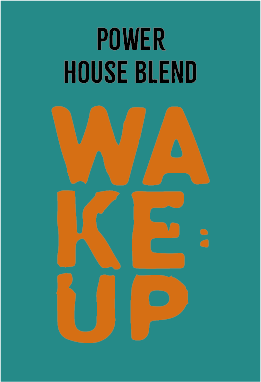

- Original House Blend:
- Monthly - Light Roast:
- Spicy Robusta:
- Power House Blend:
- Discover Monthly - Medium Roast:
De Original House Blend, onze Latijns-Amerikaanse huisblend, neemt je mee naar de zonnige velden waar cacaobonen en citroenbomen dansen in harmonie. Een romige, gebalanceerde mix met tonen van melkchocolade en een vleugje verfrissende citroen. Een koffie die de kunst van harmonie in smaak belichaamt.

Elke maand een ontdekkingsreis met de Discover Monthly - Light Roast. Laat je verrassen door de unieke mix van kaki fruit, cola en cardamom. Een lichte branding brengt de intrigerende smaken van de wereld tot leven. Voor de avontuurlijke ziel die houdt van variatie.

Intensiteit komt tot leven in de Spicy Robusta, met zijn donkere chocolade en kruidige noten. Een robuuste koffie die de zintuigen wakker schudt. Voor degenen die verlangen naar diepe, krachtige smaken en een kick van energie.

De Power House Blend, een krachtige mix van gedroogd fruit en geroosterde noten, brengt de essentie van drie continenten samen. Een koffie die een krachtige stoot geeft, perfect om de dag mee te beginnen. Voor degenen die houden van een koffie met een stevige kick.
Maak elke maand een reis met de Discover Monthly - Medium Roast. Dit gele zakje brengt de aromatische mix van kaki fruit, cola en cardamom in een medium gebrande specialiteit. Een heerlijke ontdekking voor degenen die hunkeren naar verfijnde smaken met een vleugje avontuur.